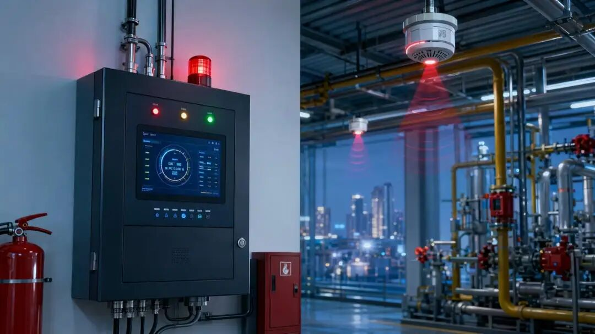
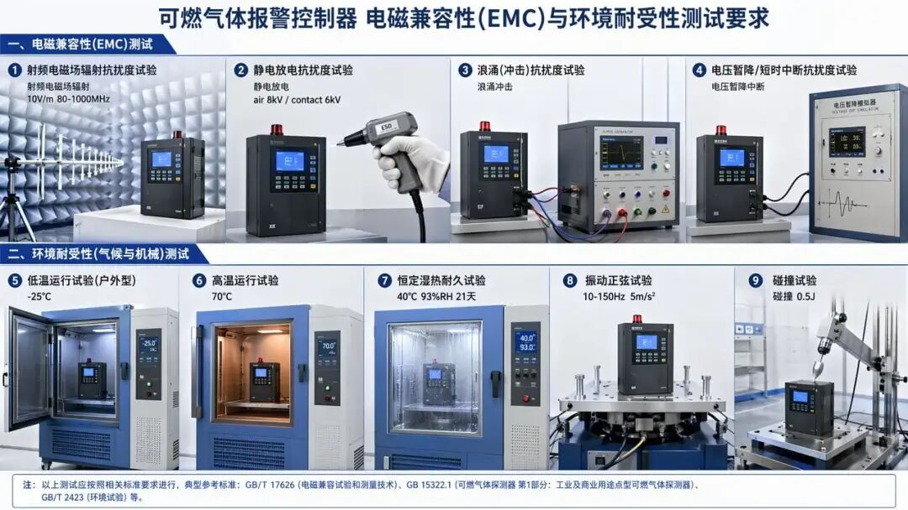

第一层：概述篇（3分钟快速了解）
📌 文件名称： GB 16808—2025《可燃气体报警控制器》
📌 文件类型： 中华人民共和国强制性国家标准（GB）
📌 发布机构： 国家市场监督管理总局、国家标准化管理委员会（由国家消防救援局提出并归口）
📌 发布日期： 2025年8月1日
📌 实施日期： 2026年8月1日（发布后留有整一年过渡期）
📌 代替文件： GB 16808—2008（第二次修订，首次发布于1997年）
📌 核心关键词： 可燃气体报警、消防联动控制、系统兼容性、安全冗余、电磁兼容
📌 适用范围： 适用于工业与民用建筑中使用的可燃气体报警控制器产品的设计、制造和检验。
📌 立法/制定目的： 适应产业发展和技术进步，提升可燃气体报警控制器的安全可靠性、功能完整性和系统兼容性，强化对燃气泄漏事故的预警与联动控制能力，保障人民生命财产安全。
📌 核心理念： 全生命周期安全管控——从产品设计、制造、检验到运行维护，建立了以“功能完整性、环境适应性、系统兼容性、故障容错性”为核心的技术指标体系，并通过多重冗余机制（双信号确认、主备电源自动切换、短路隔离器等）确保控制器在任何工况下均可靠运行。
第二层：核心要点篇（10分钟掌握关键）
【第3章：术语和定义】（2025版新增）
✓ 主要内容： 界定了屏蔽状态、自检状态、正常监视状态三个关键工作状态术语，统一了行业理解。
✓ 关键要求： 明确了各状态的边界条件——屏蔽状态下控制器不再响应被屏蔽探测器的信号但记录屏蔽操作；自检期间受控外接设备不应动作；正常监视状态要求无任何报警、故障、屏蔽、自检发生。
✓ 责任主体： 产品设计方须在技术文件中准确使用上述术语；检测机构依据该定义判定产品状态。
【第4章：分类】
✓ 主要内容： 从三个维度对控制器进行了系统分类。
✓ 关键要求：
• 按工作方式：总线制 / 多线制；
• 按使用环境（2025版新增）：室内使用型 / 室外使用型；
• 按应用方式（2025版新增）：独立型 / 区域型 / 集中型 / 集中区域兼容型。
✓ 责任主体： 生产企业须在产品标志和说明书中明确标注分类。
✓ 违规风险提示： 分类标注不明确将导致产品无法通过出厂检验和型式检验。
【第5章第3节：主要部（器）件性能】
✓ 主要内容： 对控制器核心部件提出了全面且具体的技术要求。
✓ 关键要求：
• 外壳防护等级：室内型 ≥ IP20，室外型 ≥ IP54（2025版新增）；
• 非金属外壳须通过附录 A 燃烧性能试验（2025版新增），燃烧长度不超过50 mm；
• 记录存储容量大幅提升：开/关机记录 ≥ 100条，故障报警记录 ≥ 999条，可燃气体报警记录 ≥ 999条，且时间信息精确到秒；
• 备用电源严禁使用钴酸锂和三元锂蓄电池（2025版新增），电池组须分段保护且每段额定电压 ≤ 12V；
• 音响器件连接线不得采用插拔方式，拆卸须用专用工具（2025版新增）。
✓ 责任主体： 产品设计部门、采购部门、生产部门。
✓ 关键指标： 声压级峰值 ≥ 65 dB 且 ≤ 105 dB（正前方1 m 处）；过负荷保护设定电流 ≤ 回路额定电流的2倍（＞6A 时为1.5倍）。
【第5章第5节：整机性能】（核心章节）
✓ 主要内容： 规定了控制器十项核心功能要求。
✓ 关键要求（重点变化）
| 功能 | 核心要求 | 与2008版变化 |
|------|-------------------------------------------------|----------------|
|可燃气体报警| 应在10 s 内发出声光报警；可设延时但 ≤ 60 s，延时须倒计时显示；新增双信号确认机制 |新增双信号确认（5.5.1.8）|
|报警控制功能|须设独立火灾声/光警报器控制按钮；手动/自动转换须用自复位钥匙开关；控制输出 ≥ 2点且 ≤ 6点| 整节新增 |
| 故障报警 | 100 s 内发出声光故障信号并区分部位/类型；任一故障不影响非故障部位工作 | 要求更加细化和严格 |
| 浓度显示 | 全量程指示偏差：LEL 探测器 ≤ 5%LEL，CO 探测器 ≤ 80×10⁻⁶ | 偏差要求更加明确 |
| 系统兼容 | 区域型/集中型/兼容型三类控制器须实现双向信息交互与指令传递 | 整节新增 |
| 通信功能 | 须通过 RS485/CAN/以太网之一与消防控制室图形显示装置通信，3 s 内发送信息 | 整节新增 |
| 电源功能 | 主电容量：全部报警状态下连续工作4 h；备电：监视1 h + 报警30 min | 要求更加具体 |
✓ 责任主体： 产品研发、质量检验、第三方检测机构。
✓ 违规风险提示： 整机性能不达标直接导致产品不合格，无法上市销售；涉及消防验收的工程项目将面临返工和处罚。
【第5章第9-11节：电磁兼容、气候与机械环境耐受性】
✓ 主要内容： 规定了控制器在恶劣电磁环境和极端气候条件下的性能要求。
✓ 关键要求：
• 电磁兼容：须通过射频辐射抗扰度（10 V/m，80-1000 MHz）、静电放电（空气8 kV/接触6 kV）、电快速瞬变脉冲群、浪涌、电压暂降等七项试验；
• 气候耐受：室内型（低温-10℃，高温55℃）；室外型（低温-25℃，高温70℃）；恒定湿热运行4天，耐久21天（2025版新增）；
• 机械耐受：振动（10-150 Hz，5 m/s²）、碰撞（0.5 J，3次）。

【第7章：检验规则】
✓ 主要内容： 规定了出厂检验和型式检验的要求。
✓ 关键要求：
• 出厂检验：每台必检，含主要部件检查、浓度显示、报警功能、控制功能、故障报警、屏蔽、自检、绝缘电阻、泄漏电流、电气强度；
• 型式检验：设计变更、材料变更、工艺变更、停产一年以上复产、监管要求等情况下必须进行；
• 检验结果按 GB 12978判定。
第三层：详细解读篇（深度学习与应用）
一、双信号确认机制——最具争议也最重要的新增要求
条文原文引用：
5.5.1.8 控制器具有接收两个或两个以上可燃气体探测器的可燃气体报警信号才能确定发出可燃气体报警信号的功能时，满足下述要求：a) 控制器接收到第一个可燃气体报警信号时，应发出可燃气体报警声信号或故障报警声信号，并指示相应的报警部位，但不能进入可燃气体报警状态；b) 接收到第一个可燃气体报警信号后，控制器在60 s 内接收到要求的后续可燃气体报警信号时，应发出可燃气体报警声、光信号，并进入可燃气体报警状态；c) 接收到第一个可燃气体报警信号后，控制器在30 min 内仍未接收到要求的后续可燃气体报警信号时，应对第一个可燃气体报警信号自动复位。
白话解读与释义：
这是2025版标准中最具争议性和影响力的新增条款。其核心逻辑是引入“交叉确认”机制——单个探测器报警不足以触发完整的报警响应，需要至少两个探测器在60秒内先后报警，控制器才进入正式的“可燃气体报警状态”。
这一设计的立法意图在于：在高干扰或敏感环境中降低误报率。传统单探测器报警机制可能因探测器自身故障、环境干扰（如油烟、蒸汽）、电磁骚扰等原因产生误报，误报导致的频繁联动（关阀、启动排风、触发声光警报器）不仅造成生产中断和社会恐慌，长期还会产生“狼来了”效应，降低人员对真实报警的响应意愿。
但该机制也带来了风险：如果两个探测器距离较远，燃气泄漏浓度梯度不足以在60秒内触发第二个探测器，可能导致报警延迟甚至漏报。因此标准同时设计了30分钟超时自动复位机制，避免控制器长时间处于“半报警”状态。
实际应用场景与案例分析：
场景描述： 某化工厂储罐区部署了8只可燃气体探测器，控制器启用双信号确认功能。凌晨3点，A 区1号探测器因附近阀门微漏触发低限报警，但相邻的2号探测器未达到报警阈值。
合规操作指引：
-
控制器应发出声信号（或故障声信号），指示1号探测器报警部位；
-
值班人员应立即确认是否为真实泄漏——可人工查阅1号和2号探测器的实时浓度值，若1号浓度持续上升但2号未报警，应当视同真实泄漏，手动启动应急程序；
-
若30分钟内2号探测器仍未报警，控制器自动复位1号报警；
-
建议企业在高风险区域谨慎启用双信号确认功能，或仅在特定的低风险辅助区域使用。
风险防范建议：
• 双信号确认功能应作为可选功能，而非默认配置；
• 高风险区域（如加气站、LNG 储罐区）不宜启用；
• 启用时必须在操作规程中明确人工核验流程，弥补自动确认的时间窗口风险；
• 探测器布点间距须综合考虑燃气扩散特性，确保相邻探测器能在泄漏事故中60秒内先后触发。
二、系统兼容功能——从“孤岛”到“联网”的范式转变
条文原文引用：
5.5.9.1 区域型控制器满足下述要求：a) 区域型控制器应能向集中型控制器发送可燃气体报警、故障报警、自检、屏蔽（如具有）、延时（如具有）等各种完整信息，并应能接收、处理集中型控制器发出的复位、消音等相关指令；……
5.5.9.2 集中型控制器满足下述要求：a) 集中型控制器应能接收和显示来自各区域型控制器的可燃气体报警、故障报警、自检、屏蔽（如具有）、延时（如具有）等各种完整信息，进入相应状态，并应能向区域型控制器发出复位、消音等控制指令；……d) 集中型控制器应能向区域型控制器授时，校准区域型控制器系统时钟。
白话解读与释义：
2008版标准中，各控制器之间基本处于“各自为政”的状态，一台控制器无法获取其他控制器的信息，也不具备向上级系统上报的能力。2025版标准从根本上改变了这一格局，构建了“区域型—集中型”两级架构，实现了真正意义上的系统级联网。
区域型控制器作为“现场指挥官”，负责本区域内探测器的信号采集和初步处理；集中型控制器作为“总指挥部”，汇聚所有区域型控制器的信息并统一呈现，同时具备向区域型下发指令（复位、消音、授时）的能力。集中区域兼容型则可灵活切换角色。
这一架构的技术意义在于：消防控制室不再需要面对数十台独立控制器，而是通过一台集中型控制器即可掌握全局态势，大幅提升了应急响应效率和信息可视化水平。授时功能（时钟校准）则解决了长期困扰消防系统的“时间不一致”问题——各控制器时钟偏差可能导致事故溯源时无法准确还原事件时序。
实际应用场景：
某大型商业综合体共6层，每层设一台区域型控制器，消防控制室设一台集中型控制器。当3层厨房区域发生燃气泄漏时：
-
3层区域型控制器触发报警，并立即向集中型控制器推送完整报警信息（部位、浓度、时间）；
-
消防控制室值班人员在集中型控制器上看到3层报警，同时可通过远程指令对3层区域型控制器进行消音或复位操作；
-
若3层区域型控制器发生通信线路故障，集中型控制器立即显示故障部位，提醒维修。
三、备用电源安全升级——锂电禁令的深层考量
条文原文引用：
5.3.7.3 控制器的备用电源不应采用钴酸锂和三元锂蓄电池。
5.3.7.4 控制器应能显示备用电源的电压和电量。当控制器串接电池组额定电压大于或等于12 V 时，控制器应对电池（组）分段保护并显示每段电池（组）的电压，每段电池（组）额定电压不应大于12 V，且在电池（组）充满电时，每段电池（组）电压均不应小于额定电压。当任一段电池电压小于额定电压的90%时，控制器应发出故障报警声、光信号并指示相应的部位。
白话解读与释义：
这是2025版标准中最具行业震动效应的条款之一。钴酸锂（LCO）和三元锂（NCM/NCA）电池虽然能量密度高，但其热失控风险在消防电子设备的应用场景中尤为致命——控制器本身处于长期通电、封闭安装的环境中，一旦蓄电池发生热失控引发火灾，将直接导致报警系统瘫痪，形成“安全设备本身成为安全隐患”的悖论。
标准明确这两类电池为禁用对象，实际上引导行业转向磷酸铁锂（LFP）等更安全的锂电技术路径。磷酸铁锂的热失控温度远高于三元锂，且不释放氧气，从根本上降低了火灾风险。
分段保护要求（每段 ≤ 12 V）则解决了串联电池组中“木桶效应”的问题：当电池组中某节电池性能劣化时，传统整体监测方式难以及时发现，分段保护实现了对每一节（组）电池的精准监控，任一段电压低于额定90%即触发故障报警。
实际应用场景：
某燃气公司巡检发现一台控制器的备用电池组中第3段电压降至10.5 V（额定12 V 的87.5%），控制器发出故障报警并指示具体段落。维护人员根据指示精准更换了该段电池，避免了整组报废，节省了维护成本，同时消除了因电池劣化导致的备电时间不足风险。
四、消防联动控制功能——从被动报警到主动处置
条文原文引用：
5.5.2 d) 控制器应设置不少于2点且不多于6点的控制输出，用于控制消防联动设备……5.5.2 e) 控制器在发出可燃气体报警信号后3 s 内应启动相关的控制输出（有延时要求时除外）。5.5.2 g) 具有控制输出延时功能的控制器……最大延时时间不应超过10 min，设置延时时间变化步长不应超过1 min。
白话解读与释义：
2025版标准新增整节“可燃气体报警控制功能”，标志着控制器从单纯的“报警器”升级为“报警+处置一体化”设备。标准要求控制器必须配备2至6点直接控制输出（典型如电磁阀关闭、排风机启动、声光警报器启动），且在报警信号确认后3秒内完成输出启动——这一时间要求极为严苛，意味着控制逻辑判断和执行机构动作必须在3秒内完成。
手动/自动状态转换采用自复位钥匙开关，杜绝了误触或非授权人员随意切换的可能。“自复位”意味着钥匙转动手/自动后会自动弹回，操作者必须有意保持钥匙在转换位置，这一物理防护设计大大降低了误操作概率。
延时功能（最大10分钟，步长1分钟）为特定场景（如需要人员先确认再关阀的工艺流程）提供了灵活空间，但同时要求在延时期间必须能通过手动插入或手动报警按钮直接启动输出，保留了人工紧急干预的最高优先级。
违规后果与处罚依据：
• 违规行为： 控制器未设置消防联动控制输出或输出点数不满足要求
• 法律后果： 产品不合格，依据《中华人民共和国消防法》第二十四条，消防产品必须符合国家标准；不合格产品不得生产、销售和使用
• 行政处罚： 依据《消防法》第六十五条，责令停止生产、销售，没收违法产品和违法所得，并处罚款
• 民事责任： 因产品缺陷导致火灾扩大或人员伤亡的，依据《产品质量法》承担赔偿责任
五、外壳燃烧性能——安全设备自身的防火底线
条文原文引用（附录 A）：
A.1 要求： 控制器外壳为非金属材料时，在控制器外壳上切割长80 mm、宽10 mm 的样块，按照 A.2的要求进行试验。试验后，样块的燃烧长度不应超过50 mm。
A.2.1.3 将火焰的最低部分施加于样块的顶面……施加火焰30 s，每隔5 s 移开一次……
A.2.1.2 ……氧气含量为28%（体积分数）。
白话解读与释义：
这是2025版新增的规范性附录，参照了氧指数法的原理（参考文献引用了 GB/T 2406.2—2009），但采用了更贴近实际火灾场景的试验方法。试验在28%氧浓度的富氧环境中进行（正常空气中氧含量约21%），模拟火灾初期氧气相对充足的情况。样块经受30秒火焰施加后，其燃烧蔓延长度不超过50 mm（从样块总长80 mm 来看，意味着至少30 mm 未被烧及或未持续燃烧）。
这一要求的工程意义在于：当控制器所在环境发生火灾时，其非金属外壳不会成为火势蔓延的媒介，也不会因自身燃烧产生有毒烟气加剧危害。对于广泛应用于石油化工、餐饮厨房等高风险场所的控制器而言，这是一条关键的被动防火安全底线。
六、与其他法规标准的关联性
上位法依据：
• 《中华人民共和国消防法》（2021年修订）第二十四条：消防产品必须符合国家标准；没有国家标准的，必须符合行业标准
• 《中华人民共和国安全生产法》（2021年修订）第三十六条：安全设备的设计、制造、安装、使用、检测、维修、改造和报废，应当符合国家标准或行业标准
• 《中华人民共和国产品质量法》
配套文件：
• GB 4717—2024《火灾报警控制器》（5.5.8.5直接引用其附录 C 通信协议）
• GB 15322《可燃气体探测器》系列标准（与控制器的配接基础）
• GB/T 4208—2017《外壳防护等级（IP 代码）》
• GB/T 16838《消防电子产品环境试验方法及严酷等级》
• GB 12978《消防电子产品检验规则》
衔接说明：
• GB 16808—2025与 GB 4717—2024（火灾报警控制器）在通信协议和图形显示装置接口上实现了技术对齐，为可燃气体报警系统与火灾自动报警系统的深度融合奠定了基础
• GB 16808—2025的实施日期为2026年8月1日，自该日起，2008版同时废止；在此之前，新旧版本并行有效，生产企业可在过渡期内完成设计转换和产品升级
特殊模块
模块 A：合规检查清单
|序号 | 检查项目 | 检查内容/标准 | 检查方法 | 责任部门 | 备注/改进建议 |
|---|--------|-------------------------------|-------------|-------|----------------|
| 1 | 外壳防护等级 | 室内型 ≥ IP20，室外型 ≥ IP54 |查阅产品认证证书/检测报告| 质量部 | 注意区分使用环境 |
| 2 | 外壳燃烧性能 | 非金属外壳燃烧长度 ≤ 50 mm（附录 A） | 查验型式检验报告 |质量部/采购部|2025版新增，旧产品可能不满足|
| 3 | 备用电源类型 | 禁止使用钴酸锂和三元锂蓄电池 | 拆机检查电池规格书 |研发部/采购部| 须切换为磷酸铁锂等安全型 |
| 4 | 电池分段保护 | 每段 ≤ 12 V，任一段 \< 90%额定电压须报警 | 模拟单段低电压测试 | 研发部 | 须在硬件和固件中实现 |
| 5 | 音响器件接线 | 不得采用插拔方式，拆卸须专用工具 | 实物检查 |生产部/质量部| 防止意外脱落 |
| 6 | 记录存储容量 |开/关机 ≥ 100条，报警/故障 ≥ 999条，时间精确到秒| 功能测试、数据导出验证 |研发部/质量部| 需评估存储芯片容量 |
| 7 |双信号确认逻辑 | 60 s 窗口，30 min 超时复位（如启用） | 模拟双探测器时序测试 |研发部/质量部| 确保逻辑正确，无死锁 |
| 8 |消防联动控制输出| ≥ 2点且 ≤ 6点，3 s 内启动 | 接入负载测试响应时间 |研发部/质量部| 包含手动/自动两种模式测试 |
| 9 | 系统兼容通信 | 区域型↔集中型双向信息交互与指令 | 搭建双机系统测试 | 研发部 | 通信协议须完整实现 |
|10 | 电磁兼容 | 全部7项 EMC 试验通过 | 第三方检测报告 | 质量部 | 型式检验必检项 |
|11 | 气候环境耐受 | 室内型/室外型按规定等级试验通过 | 第三方检测报告 | 质量部 | 注意室外型新增高温70℃要求 |
|12 | 产品标志 | 含名称、标准号、生产者、制造日期、软件版本号等 | 实物查验 | 生产部 | 新增软件版本号要求 |
模块 B：版本对比分析
| 对比维度 |旧版本（GB 16808—2008）| 新版本（GB 16808—2025） | 主要变化点及影响 |
|-------|------------------|----------------------------------|--------------------------|
| 适用范围 | 工业与民用建筑可燃气体报警控制器 | 同2008版，范围不变 | 范围未变，但技术内涵大幅扩展 |
| 术语定义 | 无独立术语章节 | 新增第3章，界定屏蔽、自检、正常监视三种状态 | 统一行业术语，减少理解歧义 |
| 分类体系 | 仅按工作方式（总线制/多线制） |新增按使用环境（室内/室外）和按应用方式（独立/区域/集中/兼容型）| 产品细分更精准，室外型和联网型产品迎来新市场 |
| 外壳要求 | 无防护等级和燃烧性能要求 | 新增 IP 防护等级（IP20/IP54）和附录 A 燃烧性能 | 显著提升产品安全底线，非金属外壳企业须重新选材 |
| 记录存储 | 仅要求记录报警时间 | 开/关机 ≥ 100条，报警/故障 ≥ 999条，时间精确到秒 | 存储容量大幅提升，对硬件设计提出更高要求 |
| 音响器件 | 无接线方式要求 | 接线不采用插拔方式，拆卸须专用工具 | 防止意外脱落，增加安装牢固性 |
| 备用电源 | 无电池类型限制和分段保护要求 | 禁用钴酸锂/三元锂，强制分段保护（每段≤12 V） |锂电池供应链面临调整；现有产品可能需重新设计电源模块|
| 双信号确认 | 无 | 新增可选的60 s 窗口双探测器确认机制 | 大幅降低误报率，但需谨慎使用以防漏报 |
|报警控制功能 | 无独立章节 | 整节新增：消防联动控制输出、手/自动切换、延时管理 | 控制器从“报警器”升级为“报警+联动”一体化设备 |
| 故障报警 | 基本要求 | 细化部位/类型区分，新增外接电源箱故障显示，增加短路隔离器要求 | 故障定位更精准，维护效率提升 |
| 系统兼容 | 无 | 整节新增：区域型/集中型/兼容型双向通信与指令 | 支持多控制器联网，满足大型建筑需求 |
|消防控制室通信| 无 | 整节新增：RS485/CAN/以太网通信，3 s 内上报 | 实现与消防控制室图形显示装置实时联动 |
| 电磁兼容 | 试验项目较少 | 7项完整 EMC 试验，参数更加明确 | 抗干扰能力要求大幅提升 |
| 气候环境 | 无高温和耐久湿热试验 | 新增高温（55/70℃）和恒定湿热耐久（21天）试验 | 室外型产品须满足更严苛的环境适应性 |
| 泄漏电流 | 无 | 新增：1.06倍额定电压下 ≤ 0.5 mA | 增加电气安全维度 |
| 检验规则 | 基本规定 | 细化出厂检验10项必检项目，明确6种型式检验触发条件 | 质量管控更加标准化 |
| 过渡期安排 | — | 2025年8月1日发布，2026年8月1日实施，整一年过渡期 | 企业须在一年内完成设计转换、型式检验和生产切换 |
模块 C：岗位责任矩阵
| 岗位/职务 | 法定/制度职责 | 核心任务举例 | 考核指标 | 违规后果 |
|--------|---------------------------|---------------------------------------------|--------------------|--------------------------|
|企业主要负责人 |确保产品符合 GB 16808—2025全部技术要求 | 批准研发预算和型式检验计划，签署产品合格声明 | 产品型式检验通过率100% |产品不合格导致停产整顿、罚款；造成事故的追究刑事责任|
| 研发总监 | 确保产品设计满足标准全部功能与性能指标 | 组织双信号确认逻辑、系统兼容协议、电池管理方案等关键技术攻关 | 研发样机通过全部型式检验项目 | 设计缺陷导致批量不合格，承担经济赔偿和管理责任 |
| 硬件工程师 |电源模块（含备电分段保护）、EMC 设计、外壳防护设计| 电池分段监测电路设计、EMC 滤波与屏蔽设计、IP 防护结构设计 |电路设计评审通过率、EMC 预测试通过率| 设计缺陷导致产品测试失败，返工和延期成本 |
|嵌入式软件工程师| 报警逻辑、记录存储、通信协议实现 |双信号确认60 s 窗口/30 min 超时逻辑、RS485/CAN 通信协议栈、存储管理| 功能测试用例通过率100% | 软件缺陷导致功能失效或被判定为不合格 |
| 质量经理 | 组织出厂检验和型式检验，确保每台产品符合标准 | 制定检验规程，管理第三方检测机构，处理不合格品 | 出厂合格率、客户投诉率 | 漏检导致不合格品流入市场，承担直接管理责任 |
| 采购经理 |确保外购部件（电池、外壳材料、连接器等）符合标准要求 | 建立电池准入标准（禁用钴酸锂/三元锂），非金属外壳材料燃烧性能验证 | 来料检验合格率 | 采购不合格物料导致批生产失败 |
| 生产主管 | 确保装配工艺符合标准（如音响器件接线方式） | 工艺文件更新，操作人员培训，首件检验 | 产线直通率、工艺纪律检查合格率 | 工艺违规导致产品不合格 |
|售后/运维人员 | 控制器安装调试、定期巡检、故障维修 | 安装时确认通信接口防脱落、电池状态检查、时钟校准 | 设备在线率、故障响应时间 | 安装不当或维护缺失导致系统失效 |
模块 D：常见问题 Q&A
Q1：2026年8月1日之后，已安装使用的2008版控制器是否需要强制更换？
A1：标准中未规定已安装产品的强制淘汰要求。根据《消防法》及相关法规，已投用消防产品的合规性判定以安装时的有效标准为准。但是，若控制器因故障或老化需要更换，或建筑进行消防改造重新验收时，新装产品必须符合 GB 16808—2025。建议使用单位在年度维保中评估存量控制器的状态，结合设备生命周期制定更换计划。
Q2：双信号确认功能是必须启用的吗？可以选择关闭吗？
A2：根据5.5.1.8的措辞——“控制器具有……功能时”——双信号确认功能属于可选功能。如果控制器提供了该功能（即硬件和固件支持），则必须满足标准规定的60秒窗口、30分钟超时复位等逻辑要求；但如果产品本身不设计该功能，也是允许的。企业可根据应用场景自行决定是否在产品中实现该功能。
Q3：为什么禁用钴酸锂和三元锂蓄电池？磷酸铁锂是唯一选择吗？
A3：禁用钴酸锂和三元锂是基于热失控安全性考量——这两类电池在过充、挤压或高温条件下可能发生剧烈的热失控反应。标准未指定必须使用磷酸铁锂，但磷酸铁锂因其优异的热稳定性和成熟产业链，是目前最现实的替代方案。其他满足安全要求的锂电技术（如钛酸锂、固态电池等）理论上也可使用。
Q4：现有库存的2008版控制器能否继续销售？
A4：2026年8月1日实施后，2008版标准即行废止，此后生产的产品必须符合2025版标准。对于发布日至实施日之间（2025年8月1日—2026年8月1日）生产的过渡期产品，虽然技术上可能仍参照2008版设计，但建议企业尽早切换至2025版标准，避免过渡期末端的库存积压风险。建议销售合同中明确标注产品的执行标准版本。
Q5：室外使用型控制器的 IP54要求在户外柜体中如何实现？
A5：IP54意味着防尘（不完全阻止灰尘进入但进尘量不影响设备正常运行）和防溅水（各方向溅水无有害影响）。室外安装时，控制器自身外壳须满足 IP54，外加的户外柜体可提供额外防护但不能替代控制器自身的外壳防护等级。生产企业须对控制器本身进行 IP54型式检验，而不能仅依赖外部保护柜。
模块 E：可视化图解
1. 可燃气体报警控制器工作状态转换流程
graph TD A[上电启动] --> B[正常监视状态] B --> C{探测器信号?} C -->|单探测器报警<br>且启用双信号确认| D[收到首个报警信号<br>发出声信号/故障声信号<br>指示部位] C -->|单探测器报警<br>未启用双信号确认| F[可燃气体报警状态<br>声光报警<br>联动控制输出<br>上报消防控制室] C -->|故障信号| G[故障报警状态<br>声光故障信号<br>指示部位/类型] D --> E{60s内收到<br>第二路报警?} E -->|是| F E -->|否,30min超时| B F --> H[手动复位] --> B G --> I[故障排除] --> B B --> J[手动屏蔽操作] --> K[屏蔽状态] K --> L[手动解除屏蔽] --> B B --> M[手动自检操作] --> N[自检状态] N --> O[自检完成] --> B
2. 区域型—集中型控制器系统架构
3. 控制器型式检验流程
graph TD A[型式检验触发条件] --> B{触发原因} B -->|新产品定型| C[抽取检验样品] B -->|设计/材料/工艺变更| C B -->|停产一年以上复产| C B -->|监管要求| C C --> D[外观与主要部件检查] D --> E[功能试验<br>报警/控制/故障/浓度/屏蔽/自检/信息/通信/兼容] E --> F[电源功能试验] F --> G[绝缘电阻试验] G --> H[泄漏电流试验] H --> I[电气强度试验] I --> J[电磁兼容试验<br>7项] J --> K[气候环境试验<br>低温/高温/湿热运行/湿热耐久] K --> L[机械环境试验<br>振动/碰撞] L --> M{按GB 12978判定} M -->|合格| N[颁发型式检验报告] M -->|不合格| O[产品整改后重新申请]
结语
GB 16808—2025《可燃气体报警控制器》是一次全面的标准升级，其修订幅度之大、新增内容之多，在消防电子产品标准中较为罕见。从双信号确认、消防联动控制、系统兼容组网，到备用电源安全升级、外壳燃烧性能、电磁兼容全面加强，每一项变化都直指行业痛点——误报、孤立运行、电池安全隐患、恶劣环境适应性不足。
对于生产企业而言，一年过渡期并不充裕。建议立即启动差距分析，重点关注以下四项“硬骨头”：（1）备用电源从三元锂切换为安全型电池及分段保护电路设计；（2）非金属外壳材料的燃烧性能验证和选材调整；（3）区域型/集中型系统兼容通信协议的完整实现；（4）全部7项电磁兼容试验和新增气候环境试验的通过。这些改动涉及硬件重新设计、固件重构和供应链调整，需要充分的研发和验证周期。
对于用户单位（物业、工业企业、商业综合体），本标准实施后将带来更可靠、更智能、更安全的可燃气体报警系统，但同时也意味着未来新建项目和改造项目的设备选型、系统设计和验收标准将全面更新。
免责声明： 本解读基于 GB 16808—2025标准文本的逐条分析，旨在为企业合规和行业理解提供参考。具体法律效力和执法尺度以国家标准化管理委员会、国家消防救援局及相关主管部门的官方解释为准。涉及具体产品设计、生产及合规决策，建议咨询专业检测认证机构和法律顾问。